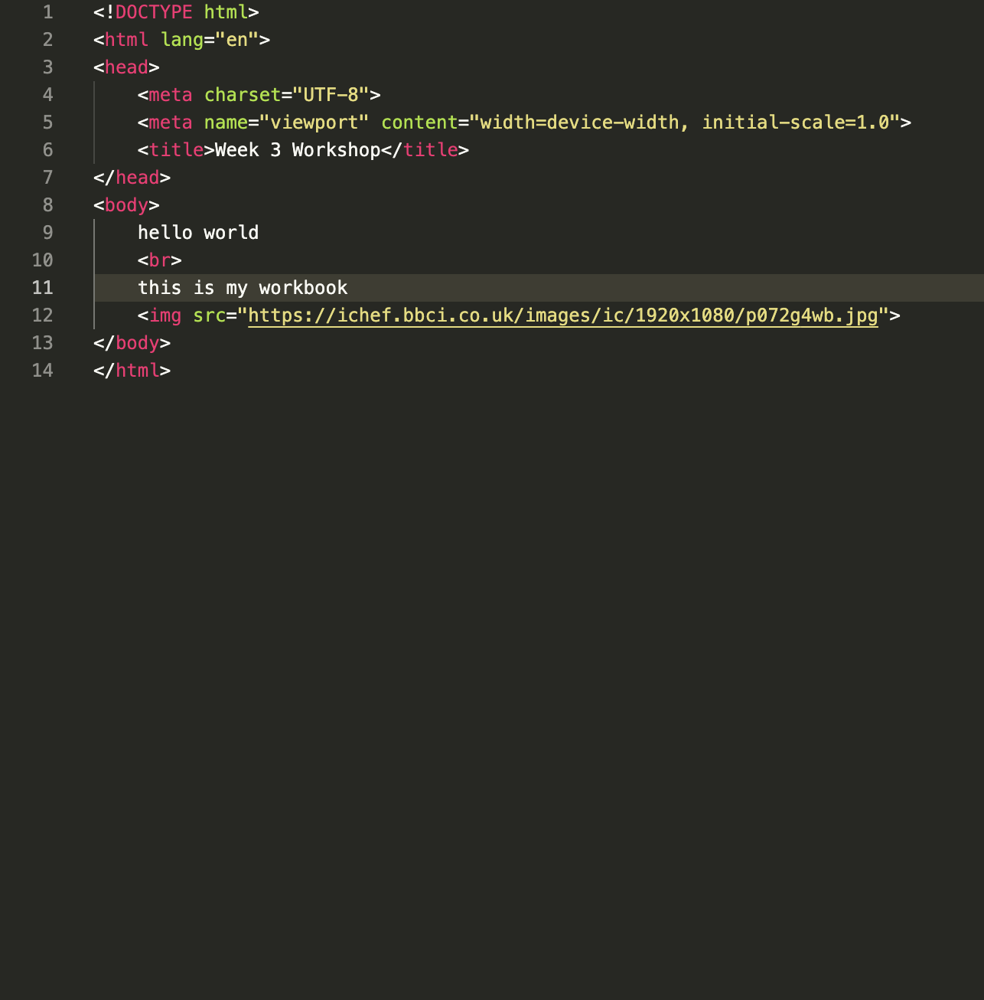

What is interactive media? Interactive media is related to the concepts interaction design new media, interactivity, human computer interaction, cyber culture, digital culture, interactive design, and can include augmented reality and virtual reality
HUNTNGATHER
Mosaic Virus (2018) and Mosaic Virus (2019) by Anna Ridler are a series of works that explore capitalism, value, and collapse from different points in history. The first is a single screen moving image piece which displays a grid of tulips continually in bloom. The second is a three screen video installation, each showing an individual tulip. In both, the appearance of the tulips is controlled by the price of bitcoin, changing over time to show how the market fluctuates.

Myraid (Tulips) is an installation of thousands of hand-labeled photographs of tulips, which later composed the dataset for Mosaic Virus 2018 and Mosaic Virus 2019. Each photograph is labeled with the colour, state (blooming) and stripes of the flower. The pieces draws attention to the skill, labour and time that goes into constructing a data set and reintroduces a visible human elements to machine learning usually hidden within algorithms.

Glitch textiles is conceptual textile designlabel founded by Phillip David Stearns in 2011. The labelwas inspired by his work in a Year of Glitch, “a year-long glitch-a-day project” (GlitchTextiles, 2022). In which he translated digital glitches into woven designs. His designs use various methods including visualising raw binary data, customising algorithms and in one piece exposing instant film to high volt-age electricity to translate into woven designs.

Maria Szakats is a Austrian fashion designer and artist, who works primarily with textiles. Her work combines embroidery and tapestry weaving with photography to create “ multifaceted, magical, and slightly eerie art pieces”(Donoghue, n.d.). She uses mohair wool to weave and embroider AI generated images at a small scale and then brushes the surface to create a blurred appearance.
WATCH
Watch one of the listed movies and list the interfaces that are featured include what, what for and how do they work
Chosen movie: Avatar
What were the interfaces used?
- Holographic screen, used to intreact with technology and read information similar to a computer. Users interact with it using their hands
- Touchpad, used to intreact with screens by making geatures on the touchpad.
- Helicopter steering, use to navigate a helicopter using your hand to press buttons, move steering, etc
- Computers, used to control other technoolgy (ie. Link units) and seracg infromation. They are controlled using the key pad and inbuilt track pad involving touch gestures.
- Controls for Robot, consists of what as mechanical controls which mimic the behaviour of the person inside. These were used to fit and faciltate mining.
- Link Units, faciltated the process of tranfersing conciousness to the Naavi bodies and was controlled byt a holographic screen and gestures.
SEMINAR
GESTURES

What gestures are used in interaction? What senses do they use? What new gestures can we use?
- swiping
- diction "hey siri"
- tapping
- holding
- lifting
- making symbols
What gestures don't exist yet?
Our group suggested a system of gestures to use for zoom or video call. Instead of clicking a button or key, you could make a gesture to mute, unmute yourself, turn camera on or off, turn sound on or off.
HELLO WORLD

What is makes up a website? What is anatomy of HTML? We each drew a website that we like of visit often from memory, adding annotations to guess details (ie. fonts, colours, etc). I chose google, specifically the search results page. Afterwards we made a group and attempted to make the website using paper HTML tags. The task was relay and unfortunately we did not win, but we did get it right.
WEBSITE CHECK
In this class we learnt how to set up a HTML page and add basic tags including images and text
